RTR: Imperium Surrectum
RTR: Imperium SurrectumNative Anatolians, part 2: Cilicia and beyond
2023-09-09 · Tarnholm

Today we will show you part 2 of our native Anatolian factions!
From Selge, we move eastwards once more into CILICIA. Though Cilicians are already mentioned in the Iliad, Homer locates them in the southern Troad and it is unclear if they had any relation with the later, better-known Cilicians in southeastern Anatolia at all. Therefore, the first safe mention of Kilikia is in an Assyrian text of the year 858 BC, which speaks of the land of H̬ilakku. Soon after, the landscape was opened up by Greek traders, who invented Kilix as the eponymous hero and founder of the Cilician people (Greek: Kilikes). The region was split into two distinctive areas: Kilikia Tracheia ("Rough Cilicia"), which was treated in the Assyrian text and encompassed the inaccessible, mountainous interior of Western Cilicia, and Kilikia Pedias ("Cilician plain"), the fertile marshes of eastern Cilicia. By the 9th century and contact with the Assyrians, the Cilicians had established early principalities which supported silver in Mesopotamia and Egypt. Greek colonisation, primarily from Samos and Lindos, led to the establishment of early Hellenic outposts such as Soloi, Tarsos or Nagidos.
When the Assyrian Empire fell in 609 BC, the Syennesids of Cilicia managed to unify most of the region, with Tarsos becoming the capital. Though Cyrus the Great of Persia subdued the Cilicians in the mid-5th century BC, the Tarsian kingdom survived until at least the 4th century BC as an Achaemenid 'vassal' state. When Alexander conquered the Persian Empire and the Seleucids later inherited Cilicia, several Macedonian military colonies (katoikoi) were planted here: Seleukeia on the Kalykadnos, Epiphaneia and Hierapolis Kastabala were largely new urban settlements, while Tarsos and Mopsuhestia were temporarily renamed to Antioch on the Kydnos and Seleukeia on the Pyramos respectively. Soon, however, the Ptolemaic dynasty secured their own foothold in Kilikia Tracheia and for the rest of the 3rd century, the two rivalling empires wrestled for control over Cilicia.
In the early 2nd century, the power of both kingdoms increasingly waned, however, Cilicia was not an area of primary interest for them, so that there was less and less centralised political control. This development favoured the rise of piracy across the Eastern Mediterranean. Together with Cretan pirates especially, the Cilicians began to organise raids over increasing distances and built up a network of bases across the Mediterranean. During the wars against Mithridates VI of Pontos, the Romans tolerated the pirates because they could weaken the Seleucids and possibly Pontos and Armenia, but soon Cilician piracy had become so widespread and so dangerous that Pompey was given extraordinary powers to deal with the threat. He defeated the Cilician pirates in particular with impressive speed by offering many of them to become his clients and potentially fight in his armies, where they would be able to continue their raids - only this time officially sanctioned by Rome.
This was not the end of an independent Cilicia, however, as high up in the Amanos mountains, independent principalities had survived which the Greeks called "Eleutherokilikes" - "free Cilicians." When Cicero was governor of the newly created province of Cilicia in 51/50 BC, he successfully campaigned against these fiefdoms, most of whom accepted to become Roman 'client states'. Yet, the inaccessibility of the mountains made it impossible to monitor them and most of Kilikia Tracheia was given to Amyntas, king of Galatia by the Caesarians in 43 AD and later to Archelaos of Cappadocia, another ally of Rome. Aside from the Amanos fiefdoms, a semi-independent state still existed around the sanctuary of Olba and Antony created a larger kingdom in Kilikia Pedias which was ruled by the so-called Tarkondimotids until 17 AD. After Tiberius had annexed Cilicia, Caligula gave the northeastern part to the kings of Commagene, until Vespasian finally made Cilicia a unified Roman province in 72 AD.
Reconstruction of the Grand Temple of Tarsos, one of the largest in the known world
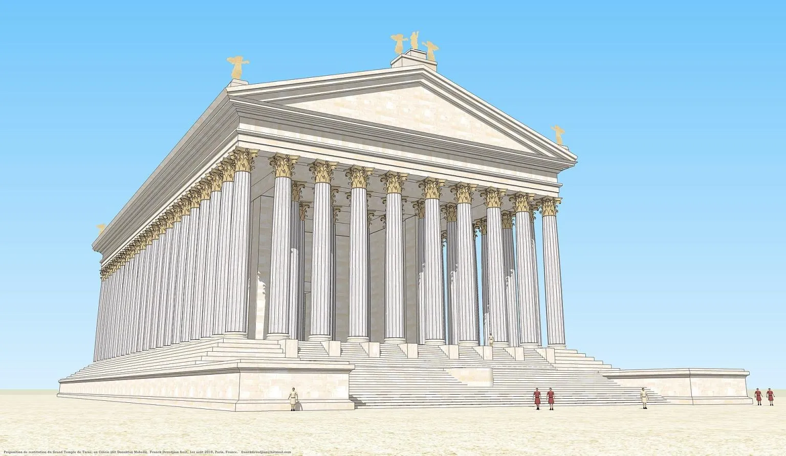
Cleopatra Gate, Tarsos, built by king Tarkondimotos I with support of Marc Antony in 40 BC
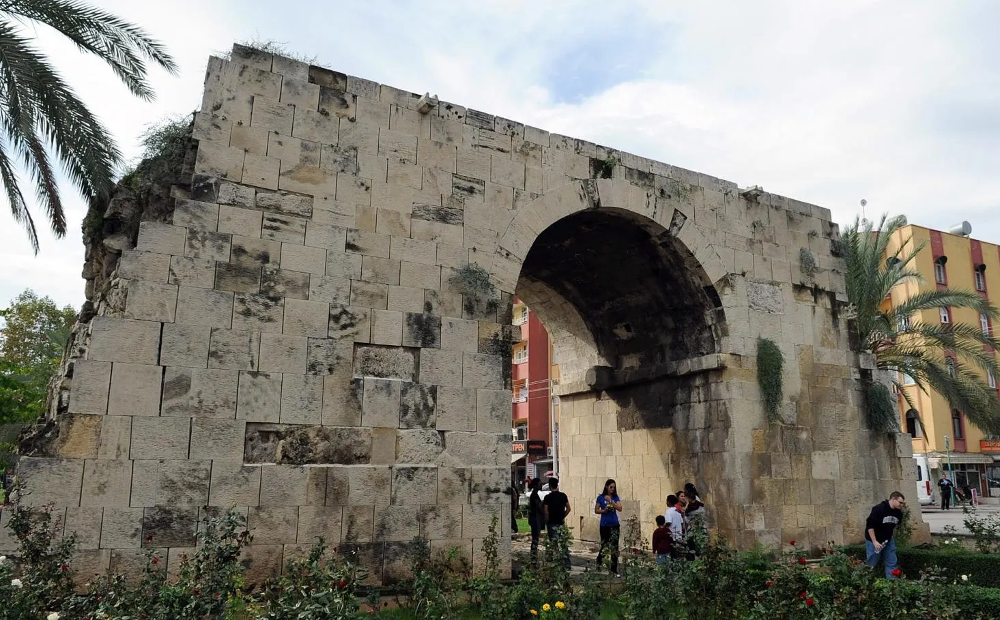
Defence tower from the temple state of Olba, Hellenistic period
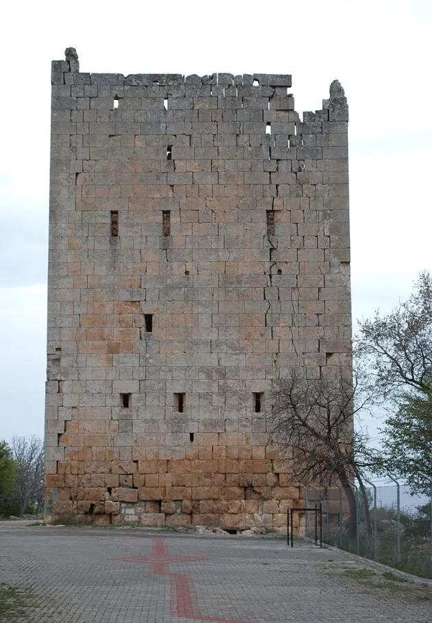
The temple of Zeus Olbios, central sanctuary of Olba
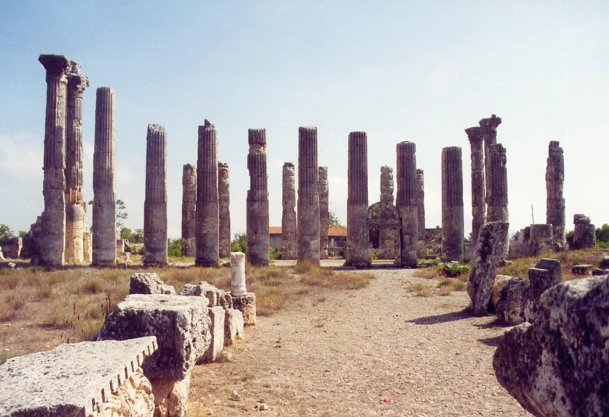
Cilicia is a revolt tag and thus doesn't start with any cities.
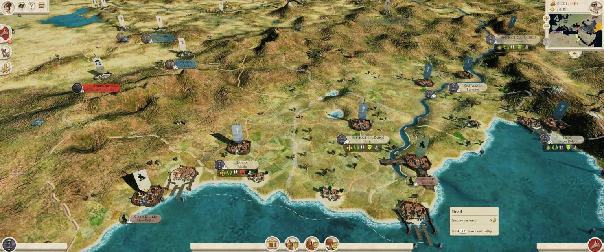
Cilician Pirates:
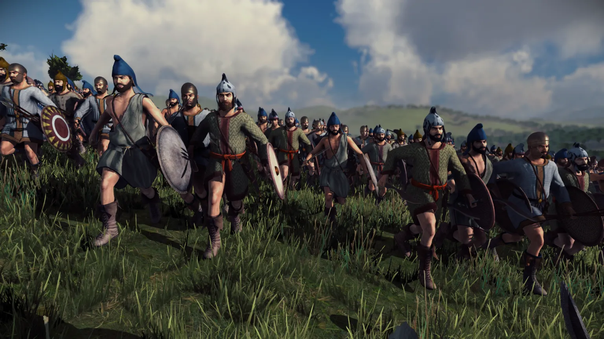
Cilician Spearmen:
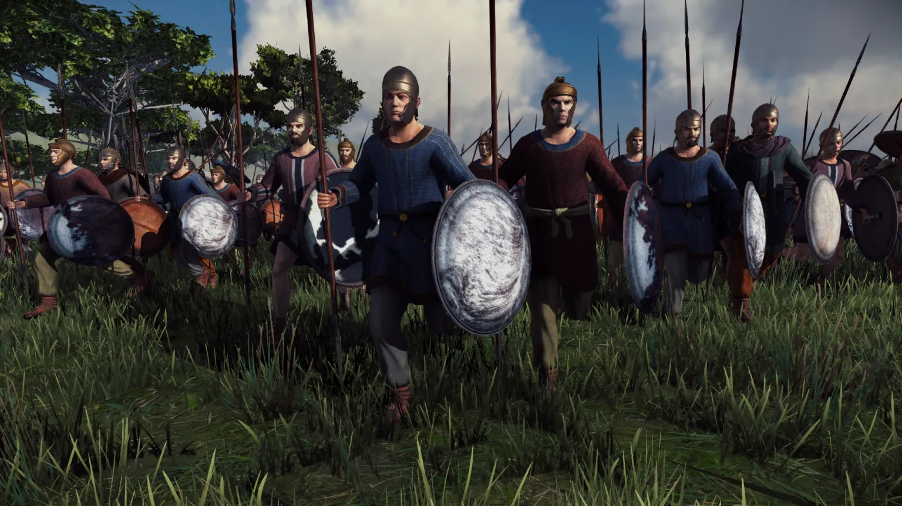
Our second last new native faction in Anatolia is the Kingdom of Paphlagonia. Paphlagonia is located in northern Asia Minor, on the coast of the Black Sea between Bithynia and (Cappadocia on the) Pontos. In the 2nd millennium BC, the Hittites called this land Palā, and its inhabitants, the Palaeans, spoke their own language, the precursor of Paphlagonian. Like the Hittites and the groups that spoke Luwian (like Lycians or Carians), they had migrated here in the third millennium BC and met the hostile native Kaskians. The Kaskians may have played a role in the downfall of the Hittite Empire, but their distinctive culture also disappeared from the records in the following centuries. Kaskians and Palaeans may simply have fused to form the Paphlagonian ethnic group.
By the 7th century BC, Greek colonisation reached the region. Milesians settled in Sinope on the Paphlagonian coast and also set up several minor cities, several of which were later (in the early 3rd century BC) combined into the Super Polis Amastris, named after Amastris, the Persian queen of Herakleia Pontike. Paphlagonia largely escaped the Persian conquest, with only the southernmost part being annexed by the Achaemenids. Politically, it was a scattered landscape, with isolated communities and few cities. And yet, Paphlagonia had a kingdom that had survived since the beginning of civilisation, and would persist even under the Roman empire: The realm of the monarchs of Gangra. Nestled into the mountain chain of southern Paphlagonia and dominating a valley 800m above sea level, it was probably already the capital of the Paphlagonian kingdom in the 2nd millennium BC. King Pylaimenes and his men were loyal allies of the Trojans, and when the Danaians, the Greeks, came to besiege the city and bring back Helen, they marched to the defence of Ilion. Pylaimenes led a group called the Eneti, but it is unknown if they had anything to do with the Veneti, after whom Venice and Venetia are named - maybe the Eneti were only those Paphlagonians in his kingdom. Oddly, Pylaimenes is eventually slain in the Iliad but later reappears to mourn the death of his son. This was probably a mistake in the composition of the work rather than a king reborn, but he was still reborn in a different way: Many later Paphlagonian kings are also attested to have worn the name Pylaimenes. Their realm around Gangra, hidden in the mountains and without great riches, survived the Lydian and Persian periods, probably as vassals of the Great Kings, and still existed in 270 BC. Most of these rulers were called Pylaimenes, and hence Paphlagonia started under a Pylaimenes in the RIS campaign. His (possible) grandson Morzios I would leave the Paphlagonian shell in the early 2nd century BC and partake in Asian affairs: After the Roman victory over the Seleucids at Magnesia in 190/189 BC, the consul Gnaeus Manlius Vulso invaded Galatia since the Celts had fought for the Seleucids. Paphlagonia had possibly been a dependency of the Galatians since their arrival in the 270s, though it seems that they had not suffered any direct incursions or interventions. Yet, Morzios now readily dispatched troops to aid the Galatians who defended the Asian Mount Olympos. The Romans won the battle and the campaign, but neither Galatia nor Paphlagonia were dissolved: instead, the Romans preferred to keep these states alive to be able to heap pressure on their powerful allies, the Attalids of Pergamon, whenever they needed it.
Morzios soon faced another challenge: A Gaul by the name of Gaizatorix (Leader of the Gaisates), who had erected a principality in western Paphlagonia, invited Pharnakes the king of Pontos, to attack the Paphlagonian kingdom. The king had just captured Sinope and made it the new capital of his realm and was ambitious to expand his influence further. The royal forces thus invaded the interior of Paphlagonia, plundered farmsteads, captured forts and weapon depots and abducted many peasants and their families to sell or use them as slaves. Morzios' army apparently retreated behind the safe walls of Gangra and Pharnakes did not dare to attack the capital directly. At the same time, Pontic troops captured Tieion on the Paphlagonian coast and raided northern Cappadocia. Soon, however, Eumenes II of Pergamon and his brother (the future Attalos II) returned from a diplomatic trip to Rome and they were incensed about what had happened. The Attalids gathered their forces, sent words to their allies and promised to bail out Morzios and his Paphlagonians. Gaizatorix and another Galatian dynast, Cassignatus, heard these news and now claimed that Pharnakes was a threat to them and they asked for the protection of Pergamon. Attalos was irritated by their pleas and ignored them, instead uniting his army with that of Ariarathes IV of Cappadocia near the Halys river. At this point, envoys from Rome arrived to arrange peace between the two parties. However, the following negotiations failed miserably. Though Eumenes had to leave the warzone for a while to support his Rhodian allies in suppressing a revolt of the Lycians, by 179 BC, the Attalid-Cappadocian alliance, supported by Rhodes, Herakleia Pontike, Chersonesos and Kyzikos, had won a string of victories. Paphlagonia was freed and Pharnakes had to give in. In the peace treaty, he promised to hand back all the captives, civilians as well as soldiers, all the booty and the weapons he had stolen from Paphlagonia to Morzios. Morzios also gained the territory around Krateia west of Gangra either through the treaty or shortly thereafter, possibly from Gaizatorix. He ruled until his death and was followed by his son Morzios II before two more kings called Pylaimenes. The latter of these two allegedly bequeathed the kingdom to Mithridates VI the Great of Pontos, but Pylaimenes' brother Astreodon and various puppet-rulers continued to rule in different parts of Paphlagonia. When Pompey ultimately defeated Mithridates and reorganised the East, he confirmed another Pylaimenes as ruler of Paphlagonia, who co-ruled with his brother and was followed by his son Attalos - a clear sign that the Attalid reinforcements of 182-179 BC were not forgotten. Antony later made the Galatian tetrarch Kastor king of Paphlagonia, and his son, the great Galatian king Deiotaros, included most of Paphlagonia in his kingdom. What happened to Attalos and his family is unclear: Some think Gangra still formed an independent fiefdom until some point in the first century AD, but Strabo calls Deiotaros the last king of Paphlagonia. It is possible, however, that Strabo - just like history - had largely forgotten about the kingdom of Paphlagonia around Gangra.
Rock grave in the mountains of Gangra, Paphlagonia
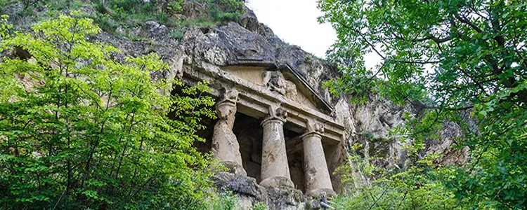
View of Çankırı, modern Gangra
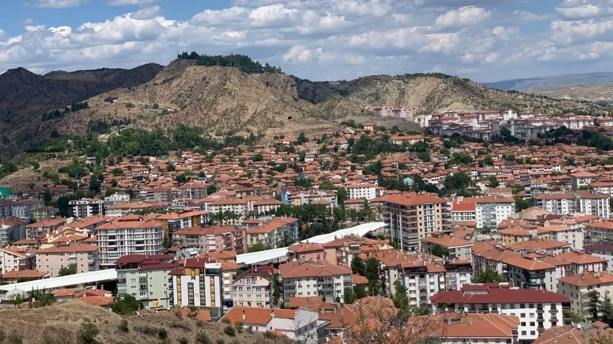
Obverse of a coin of a Paphlagonian king Pylaimenes, late 2nd century BC
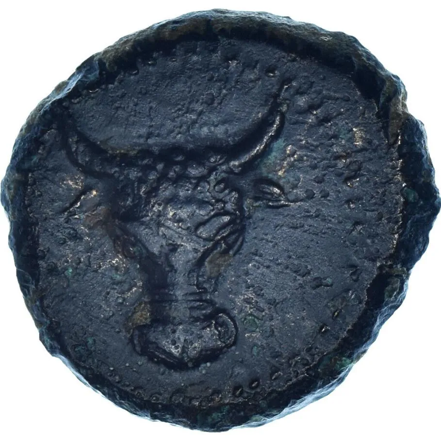
Paphlagonian Javelinmen:
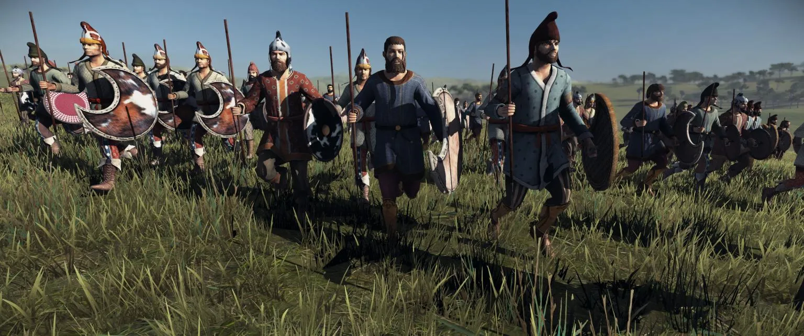
Paphlagonian Cavalry:
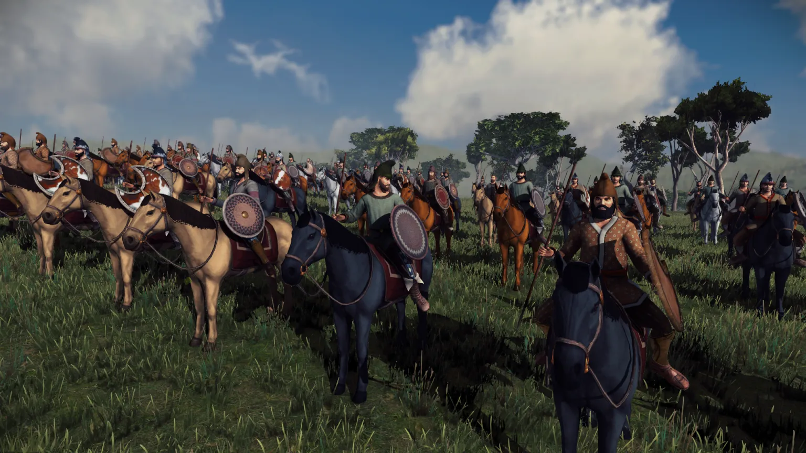
Mariandynian Javelinmen:
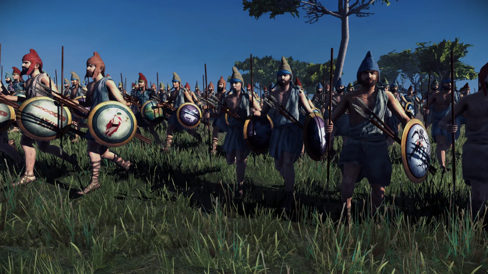
Masdyenian Infantry:
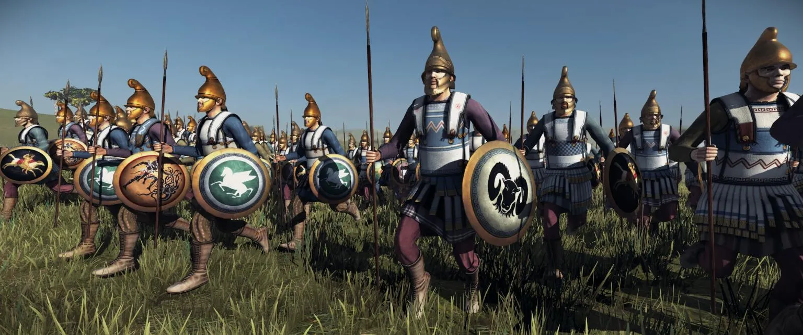
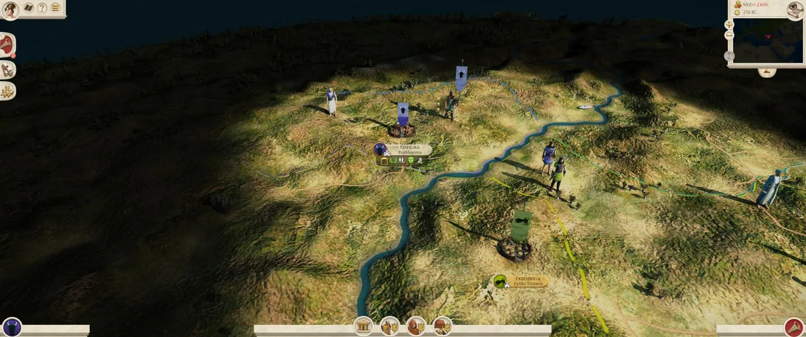
Our last faction is the LYSIAD DYNASTY. This seemingly obscure family ruled a sizeable principality in the 3rd and 2nd centuries BC. The first representative of the house is probably the Lysias who appears as a military commander under Seleukos I in 286 BC. He blocked the entrances to the Tauros mountains so that the defeated Demetrios Poliorketes could not enter Syria. He may have been the father of a Philomelos, who is only known as the father of Lysias (II), the first ruler of the principality. The family held ancestral possessions in central Phrygia but was of Macedonian descent. It seems obvious enough that the later dynasts were members of a long line of Macedonian officers, who had been in the service of the Seleucids for generations. The first Philomelos was probably still alive in 270 BC and he starts the RIS campaign as a Seleucid military governor in Phrygia. He and his son, the future prince Lysias, control Dokimeion and Synnada. Synnada was a Phrygian city which controlled the quarries at Dokimeion, a dependent community (kome), where valuable alabaster like marble was won. The revenues from the marble production and trade probably laid the ground for the power basis of the Lysiads.
In 248/247 BC, Lysias was sent to Delphi as a proxenos (honourary envoy) to represent the interests of his house and the region of Synnada. It is unknown when he returned to his native land, but by the time he did, Seleucid rule in western Asia Minor was beginning to disintegrate: In 245 BC, Antiochos Hierax (259-226 BC) had rebelled against his older brother, the new Seleucid king Seleukos II (265-225 BC). With the support of the Galatians, Cappadocia, Bithynia and Pontos, Hierax managed to oust his brothers' troops from most of Asia Minor. Seleukos started a counter-offensive and advanced as far as Lydia, but in 239 BC he was decisively defeated at Ancyra in Galatia. Next, Antiochos Hierax tried to force (back) Pergamon under his personal (Seleucid) authority, but his army suffered two heavy defeats against the Attalid troops. The war raged on for several years, but in 229/228 BC Attalos I of Pergamon won such a great victory that Hierax was all but finished. He died in Thrace three years later.
Lysias had not been idle and seized control of the areas surrounding Synnada and Dokimeion. He did, however, not declare his independence, but swore loyalty to Seleukos II. Yet, as the last and only holdout of Seleucid power in western Anatolia, he was effectively self-ruling. Lysias was well aware of his opportunities and, probably at this point, founded two new cities - not a surprise, considering that Dokimeion had already received a Macedonian colony by Lysimachos. The new towns were Lysias, named after the prince himself, just west of Synnada, and Philomelion, named after his father or minor son of the same name, at modern Akşehir. He had now accumulated so many riches that he also began to participate in euergetism - the ostentatious demonstration of wealth to the benefit of others. In 226 BC, Rhodes was hit by a terrible earthquake, which felled the famous colossus. Many kings sent money to help the Rhodians and to assist them in re-erecting the wonder. Yet, the Rhodians instead took the money and invested it into a war harbour, new walls and more warships.
Lysias was hardly fazed by this, as he suddenly had greater problems: As the last representative of Seleucid power in the West, he became the target of the ambitions of Attalos I of Pergamon. It seems that Lysias decided to launch a pre-emptive strike: He was in touch with Seleukos II, who was preparing a full-scale invasion of Asia Minor and planned to raid directly into the heart of Attalid territory. At this time, however, Seleukos II fell from his horse when starting his march and died of his wounds. He was followed by his son Seleukos III (243-223 BC) and the teenage monarch immediately resumed the plans of his father. Only a few weeks later, some of his troops had reached the territory of Lysias and accepted the principality back into the Seleucid Empire. In fact, Lysias was still a rather autonomous ruler, though, and he now spearheaded the planned attack on the kingdom of Pergamon. Attalos had by now figured out what the dynast was up to, however, and inflicted several minor defeats on the attackers. On other fronts, the new Seleucid king only had limited success as well and after only three years, his chief minister, the Carian Hermeias, had him murdered.
The premature death of Seleukos III could have been a decisive blow to Seleucid's ambitions, but his younger brother and successor Antiochos III (241-183 BC) would exceed expectations - though only after a difficult start. While Antiochos was dealing with the rebellion of the satrap of Babylonia, Molon, his cousin (?) Achaios, who had been made governor of Asia Minor, declared himself king and marched to the east. He only got as far as Lycaonia, however, his troops realised that he was aiming to kill Antiochos, the rightful king, and refused to go even one step further. Hence, Achaios decided to consolidate his position in Anatolia first and began to open hostilities against Attalos. At some point during these years (after 220 BC), Lysias died of old age and his son Philomelos continued the dynasty.
While war was raging between the Attalids and Achaios and between Antiochos and the Ptolemies - ultimately leading to Ptolemaic victory at Raphia in 217 BC - Philomelos secured his position as the dynasty of Phrygia around Synnada. Despite the defeats of Antiochos, he decided to throw in his lot with the rightful king and promised his support. Antiochos, after quelling unrest elsewhere in the kingdom, now turned westwards and concluded an alliance with Attalos. While Achaios had intervened in Pisidia to support his allies against the aggressive expansion of Selge, the tide had turned against him. Soon, Antiochos advanced along the southern coast of Anatolia and eventually besieged Achaios in his capital Sardis. After a lengthy siege of two years, the city fell and Achaios was executed. Philomelos swore eternal loyalty to Antiochos and was allowed to keep his position as a local dynast and now official Seleucid governor.
Just like his father, Philomelos was keen to prove that he was a wealthy and benevolent ruler. While his father had been a proxenos at Delphi, the second Lysiad prince concentrated his efforts on the Apollo sanctuary at Didyma near Miletos, which contained one of the most important Greek temples in Asia. Here, he made an endowment of five teams of mules with five attendants - a pragmatic man. These actions, befitting a king rather than a governor, did not damage his relations with Antiochos III, however, and when the Roman-Seleucid War broke out in 192 BC, Philomelos joined the monarch's coalition. After the Seleucid invasion of Greece at the behest of the Aitolians and Elians ended in shambles, Antiochos and his allies were ultimately defeated at Magnesia in 190/189 BC. Philomelos was now in a precarious situation and renewed his ties with the Galatians and the Pisidian Polis Termessos. Together with the Termessians, he launched a raid against Isinda in Lycia but was thwarted by the consul Gnaeus Manlius Vulso.
Vulso then moved against the Galatians and won a string of victories which ended the war. Thus, in 188 BC, in the treaty of Apameia, all of Asia Minor west of the Tauros and south of Bithynia was effectively given to the Attalids of Pergamon, with Lycia and Caria becoming Rhodian possessions. In the north, Herakleia Pontike, Sinope and Paphlagonia retained their independence, while the Galatians were left to the mercy of the Attalids and Selge refused to accept the Attalid position. Our dear Lysiads are not being mentioned and it is likely that Rome, Rhodes and Pergamon had decided that the Attalids were allowed to liquidate the principality whenever they wanted. We hear nothing further about them in the ancient sources, but during an Attalid-Galatian War in 166 BC, Lysias was under the control of Pergamon, while Synnada was still independent. Possibly, the dynasty was reduced over time, losing town by town, and eventually disappeared from history as the last traces of Seleucid rule in western Asia Minor vanished forever.
A sarcophagus made of the alabaster-like marble of Dokimeion and exported to Rome, 180-150 BC
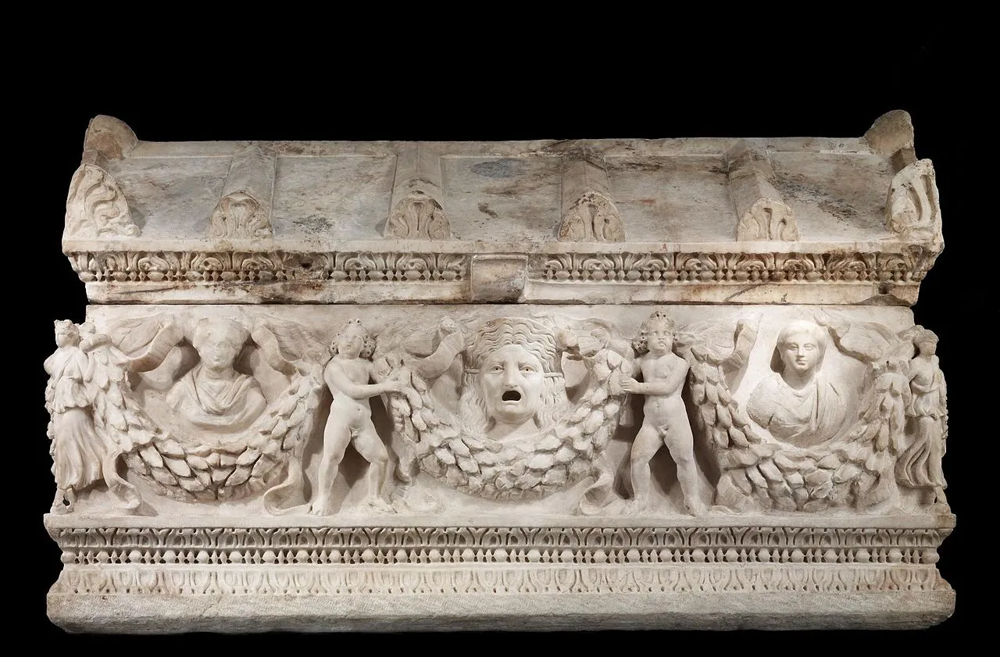
Rock grave, possibly from the Lysiad period, at Synnada
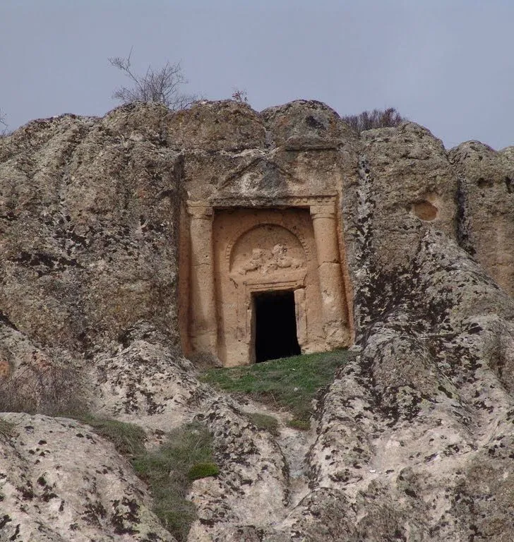
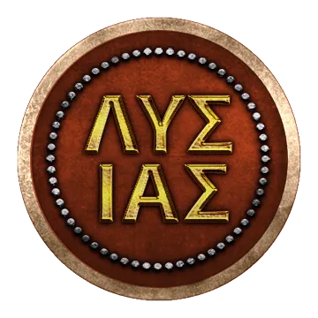
Lysiads is a revolt tag and thus doesn't start with any cities.
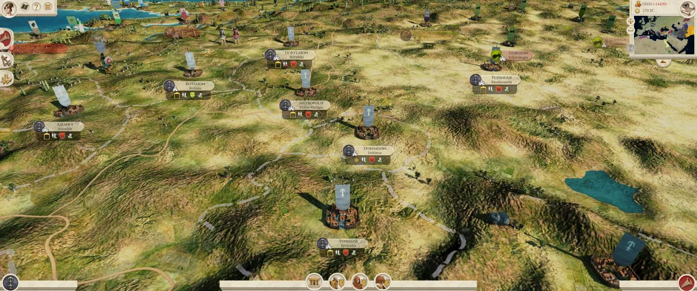
Phrygian Javelinmen:
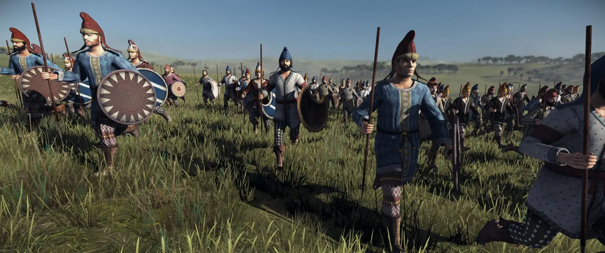
Phrygian Cavalry:
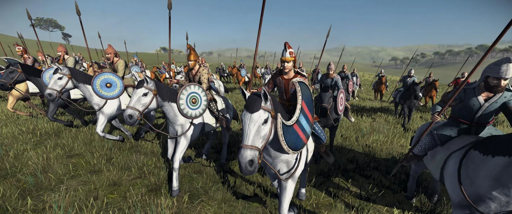
Phrygian Spearmen:
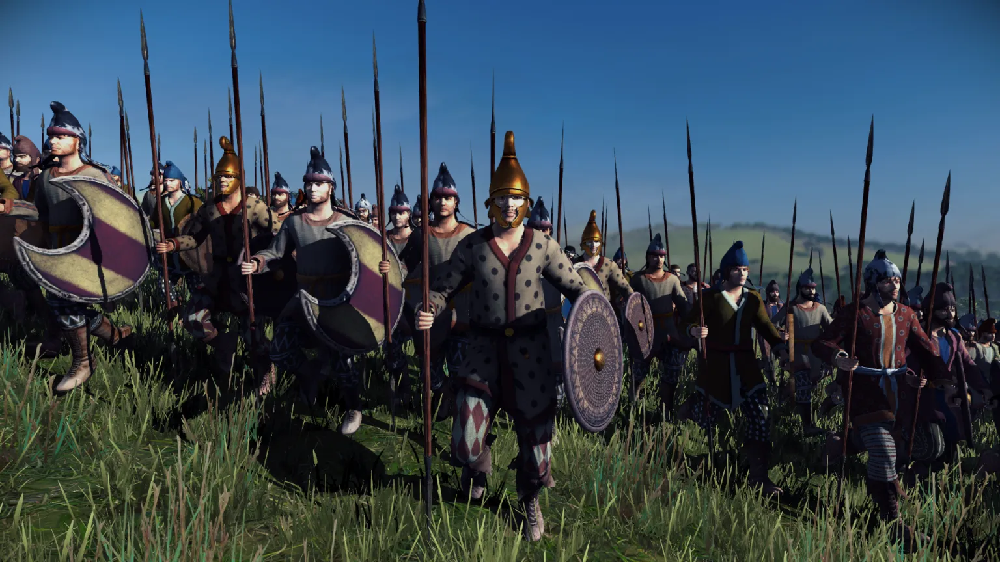
In addition to the faction specific units we got a few regional AOR units as well:
Mysian Javelinmen:
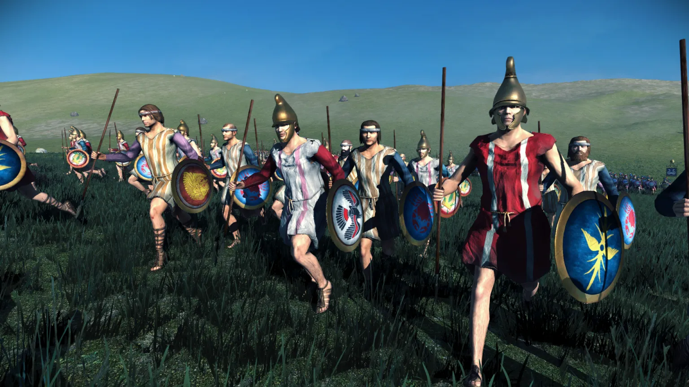
Mysian Archers:
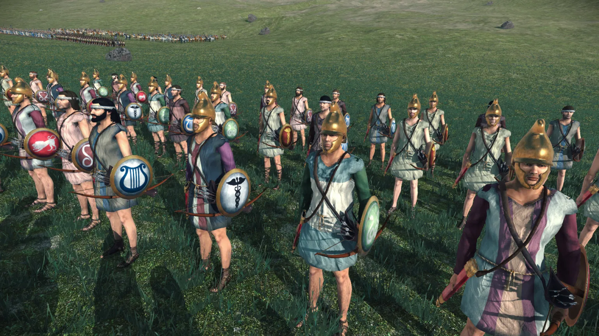
Lydian Akontistai:
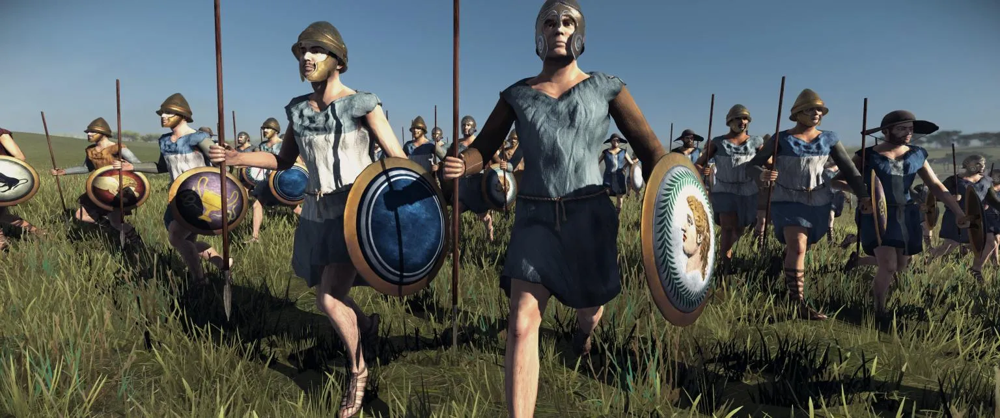
Lydian Hippakontistai:
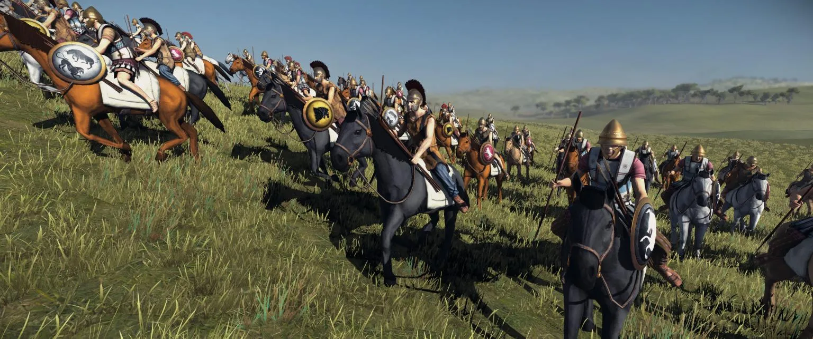
Isaurian Marauders:
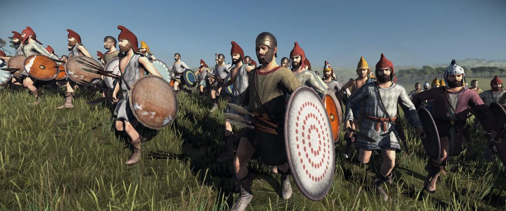
This concludes our previews of the native Anatolian factions. Discussions can be had in a channel as always. 🙂